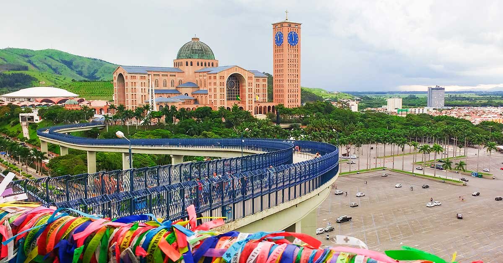

Minha vida no Japão — Quem somos
Conteúdo real do dia a dia: vídeos, fotos, dicas práticas e relatos sobre morar e trabalhar no Japão.
Canal no YouTube integrado • Novas histórias toda semana
Conteúdo real do dia a dia: vídeos, fotos, dicas práticas e relatos sobre morar e trabalhar no Japão.
Canal no YouTube integrado • Novas histórias toda semana
Meu nome é Wesley Miyaguchi e moro no Japão desde 2019.
Minha família veio junto comigo, minha esposa Shirley e meu filho Wislley, que tinha apenas
8 meses na época, era bem novinho. Hoje! Temos uma menina também, que se chama Ashilley. Ela nasceu na cidade de Iwata-shi, em 2022,
a mesma cidade onde moramos até hoje. Já se passaram 7 anos desde que chegamos aqui.
Minha esposa é natural de Campinas, e eu sou natural de Aparecida do Norte, interior de São Paulo. Aparecida é reconhecida nacionalmente
como o maior centro de peregrinação católica do Brasil. A cidade abriga o Santuário Nacional de Nossa Senhora Aparecida,
dedicado à padroeira do país, que atrai milhões de fiéis todos os anos, especialmente no dia 12 de outubro,
data oficial da celebração.
Além de sua forte identidade religiosa, Aparecida também se destaca pelo seu comércio tradicional.
A Feira de Aparecida, considerada o maior shopping a céu aberto do Brasil, reúne centenas de barracas
com produtos religiosos, artesanato, lembranças e produtos eletrônicos em geral. Esse movimento constante faz da cidade
um importante polo turístico e econômico da região.
Como a maioria das pessoas que vivem em Aparecida, eu também trabalhava na área do comércio. Eu era representante
de vendas. Eu saia pela cidade toda para fazer minhas vendas, preparava a mercadoria para entrega, realizava as entregas, era responsável por atrair novos clientes
e recebia os valores das vendas em mãos, Trabalhava de forma autônoma, mais pra mim trabalhava meu irmão e meu primo, só assim eu conseguia dar conta de tudo. Mesmo nos fins de semana, quando Aparecida recebia muitos visitantes e ficava
lotada de pessoas, lá estava eu! No meio de todo aquele alvoroço, eu queria ter a certeza que nenhum cliente meu, ficasse sem mercadoria
para oferecer aos visitantes de Aparecida.

Minha esposa, por outro lado, trabalhava em um ateliê que ficava a apenas 100 metros de casa.
Enfim, no Brasil, a vida já não era mais aquilo que esperávamos, então decidimos mudar completamente nossa trajetória.
Conversamos muito e resolvemos vir morar no Japão, deixando para trás tudo o que havíamos conquistado até aquele momento.
Após a decisão de vir para o Japão, começou a procura por agências que cuidassem de toda a papelada
e nos colocassem no caminho certo. Usando a experiência de já ter vindo ao Japão uma vez, corri atrás de uma agência
que nos passasse segurança, e foi assim que cheguei até a Htour Empregos no Japão.
Perguntamos tudo, tiramos todas as nossas dúvidas, e então chegou a hora de iniciar os trâmites para solicitar o visto.
Renovamos nossos passaportes, tiramos o passaporte do Wislley e reunimos todos os documentos necessários.
Na primeira tentativa, veio a primeira decepção, nossos vistos foram negados, mas não desistimos.
Esperamos longos 6 meses para a segunda tentativa. Renovamos toda a documentação que havia vencido e,
com a Regiane acompanhando tudo ainda mais de perto, não teve como negar, nossos vistos foram aprovados,
e assim começou nossa jornada rumo ao país do sol nascente.
Com o visto já em mãos e as passagens marcadas, embarcamos no dia 28 de janeiro de 2019 e chegamos ao Japão
no dia 31 de janeiro. Eu estava muito feliz, mas também com a sensação de ter deixado para trás um pedaço do coração.
Só Deus sabe como é sair do seu país e ficar longe de familiares, alguns que talvez você nunca mais verá.
Às vezes, não é um “tchau”, é um “adeus” que muitos de nós se recusam a enxergar. Só sabe quem passa.
Infelizmente, esse é o preço do sonho a ser pago.
Desembarcamos em Nagoya, e estava muito, mas muito frio! Nossas roupas não eram adequadas para o inverno do Japão.
Uma pessoa já nos esperava no portão de saída, ela era a representante da empreiteira responsável pelo nosso contrato.
A partir dali, eles cuidariam de tudo, “apato” (apartamento), emprego e todas as demais necessidades
para nossa permanência no Japão.
Na primeira semana, já fizemos entrevista na fábrica onde começaríamos a trabalhar na semana seguinte.
Também conseguimos uma creche para o Wislley, cujos donos eram brasileiros, o que nos deixou mais tranquilos.
E assim, um dia após o outro, fomos seguindo nossa vida até aqui. Hoje, diferente de quando chegamos, que éramos três,
agora somos quatro. Como já disse, minha filha nasceu aqui no Japão, mas não será japonesa.
Filhos de estrangeiros continuam sendo estrangeiros. No caso da minha menina, ela é brasileira, apenas nascida no Japão.
Minha mãe, Joana, veio para o Japão em 2024. Morou conosco por um período e hoje mora em um apato por conta própria.
Tenho um vídeo no YouTube onde falo sobre isso.
O video esta aqui, só clicar para assistir.
Aproveite e já se inscreva em nosso canal.
Agora, em 02/01/2026, enquanto escrevo esta história, seguimos nos esforçando como sempre.
Não desistimos dos nossos sonhos e toda vez que olhamos para trás, percebemos que estamos cada vez mais longe
do ponto onde começamos e cada vez mais perto de realizar nossos sonhos.
Agradeço muito ao Japão por nos proporcionar a vida que temos hoje. Graças a Deus, é uma vida corrida,
quase não temos tempo durante a semana, mas quando estamos juntos, fazemos tudo valer a pena.
Hoje trabalho em fábrica, um trabalho muito pesado e sujo, produzo vídeos para o YouTube e sou programador em constante crescimento.
Minha esposa também trabalha em fábrica, e meus filhos estudam em escola japonesa, já falam bem o idioma e graças a Deus estão fluindo muito bem na escola.
Bom, acho que é isso. Espero que você tenha gostado da nossa trajetória até aqui.
Talvez não seja uma história cheia de emoção, mas é uma história real, vivida com esforço, fé e persistência.
Deus abençoe todos vocês, e que seus sonhos se tornem a mais desejada realidade.
Um forte abraço.
A realidade financeira de muitas famílias hoje no Japão. Como está a vida por aqui?
Vamos pensar um pouco. Vou considerar uma situação semelhante à minha,
2 adultos e 2 crianças.
Considerando uma média de salário por hora de ¥ 1.300 para o homem e ¥ 1.200 para a mulher,
valores que já estão acima do salário de muitas pessoas por aqui.
O salário mínimo japonês é de ¥ 1.118 por hora, independentemente do gênero.
Com essa renda, vamos pensar da seguinte forma:
Após os impostos obrigatórios, como imposto de renda, imposto municipal, seguro saúde e aposentadoria, a renda líquida mensal gira em torno de ¥ 280.000 a ¥ 320.000, a partir dos ¥ 400.000 brutos do casal.
Sobre esse valor, ainda temos as despesas básicas do mês:
aluguel, água, luz, gás, celular (telefone), internet,
escola para quem tem filhos, mantimentos, entre outros.
Essa é uma média de gastos. Claro que existem pessoas que gastam menos
em relação aos valores apresentados abaixo.
| Categoria | Valor médio |
|---|---|
| Aluguel | ¥ 50.000 ~ ¥ 60.000 |
| Água, luz e gás | ¥ 25.000 ~ ¥ 40.000 |
| Internet e telefone | ¥ 10.000 ~ ¥ 13.000 |
| Alimentação | ¥ 80.000 ~ ¥ 100.000 |
| Escola (média por criança) | ¥ 15.000 ~ ¥ 30.000 |
Total estimado de despesas: ¥ 190.000 a ¥ 240.000
Somando esses valores, sobraria em torno de
¥ 80.000 a ¥ 100.000 por mês para o casal.
Isso é apenas uma base. Não quer dizer que não compensa vir para o Japão.
Dependendo da forma como você vive aqui, é possível sim guardar um bom dinheiro.
Porém, se a ideia for juntar rápido, aí já é outra questão.
Com os preços sempre nas alturas, fica cada vez mais difícil
fazer aquele famoso “pé de meia”.
Mas isso não significa que seja impossível.
Mesmo com dois adultos trabalhando, muitas famílias vivem no limite do orçamento. O Japão oferece segurança, organização e qualidade de vida, mas financeiramente exige planejamento e escolhas conscientes.
Com pouca margem para poupança, qualquer imprevisto pode gerar aperto financeiro, tornando o controle de gastos essencial para manter a estabilidade familiar.
Viver no Japão hoje não é impossível, mas também não é simples. Ter informações claras sobre os custos reais ajuda as famílias a se prepararem melhor e evitarem frustrações financeiras no dia a dia.
Aqui nós mostramos um pouquinho de como vivemos nesse país maravilhoso
Mostramos um pouco dos nossos desafios e das nossas dificuldades, nossa luta do dia a dia
E se caso você gostar do nosso conteudo, considere se inscrever em meu canal
Mata néh!

Acesse o Instagram para ver mais fotos
@wesley_miyaguchi

Acesse o Facebook para mais
@ShirleyeWesley